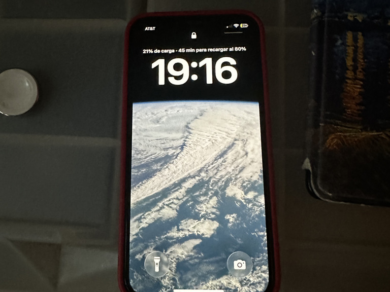

21-05-2026
By Sofia Maldonado
Recently I've been thinking a lot about my mom's current phone, an iPhone 12, that was my phone before I had the one I currently own (14 Pro).
Using it I'm surprised by all the things that I now see in it as defficient (mainly the screen refresh rate ofc, cameras, battery and storage) that I never really noticed when I had it.
Many people like using the phrase "you never know what you have until its gone", but my life experience has mostly been the opposite: you never know what you don't have until you have it. I am very happy with my current phone but I'm sure that I'll see it in the same way when I eventually switch.

Her phone, photo taken today while she charged it